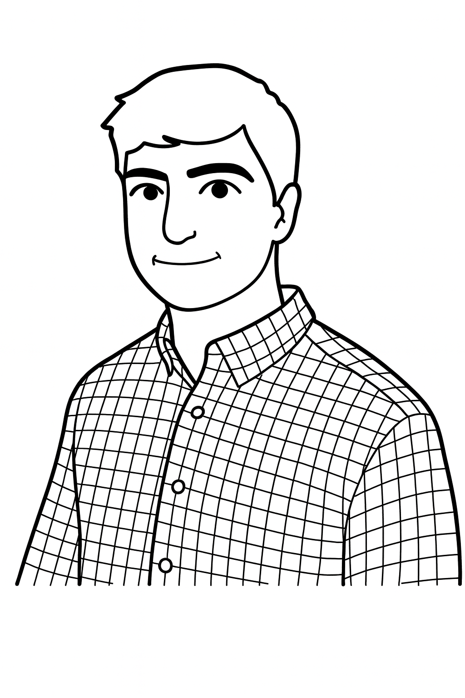

Links |
About MeHi, I'm Matthew Runyan, a machine learning engineer and computational biologist working on deep learning models for pre-mRNA splicing and variant interpretation. I enjoy building genomic pipelines, training neural networks on personal transcriptomes, and making sense of the regulatory code with model interpretability tools. I’m currently at the Institute for Experiential AI at Northeastern University, and I completed my MS in Bioinformatics at Northeastern and my BS in Biomedical Engineering at the University of Virginia. ProjectsDeep Learning Models of Alternative Splicing with Personal TranscriptomesDeveloping dilated convolutional neural networks, masked language models, and transformer architectures to predict splice-site usage and variant effects using personal transcriptomes. Includes building modular training pipelines, automated experiment tracking, and interpretability workflows (DeepLIFT/SHAP, motif discovery, etc.).
Status: manuscript in preparation (2025). GTEx / ENCODE RNA-seq & WGS Processing PipelineDesigned and maintain a Nextflow-based pipeline to process RNA-seq and whole-genome sequencing samples from GTEx, ENCODE, and internal cohorts. The pipeline handles QC, alignment, splicing quantification, and downstream integration with splicing models. Tech: Nextflow, STAR, rMATS, LeafCutter, SpliSER, SAMtools, SLURM/HPC. Automated Selection & Placement of Multicellular AggregatesBiomedical engineering capstone project building an automated system to handle multicellular aggregates for biofabricated tissue constructs. Used MATLAB-based real-time image processing to detect aggregates and Arduino-controlled motors for precise placement.
University of Virginia, Aug 2021 – May 2022. RésuméEducation
Research & Industry Experience
Selected Skills
Full details in my CV (PDF). Contact
Email: runyan.m@northeastern.edu |